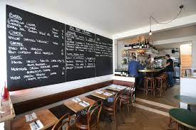
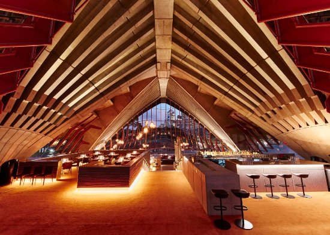
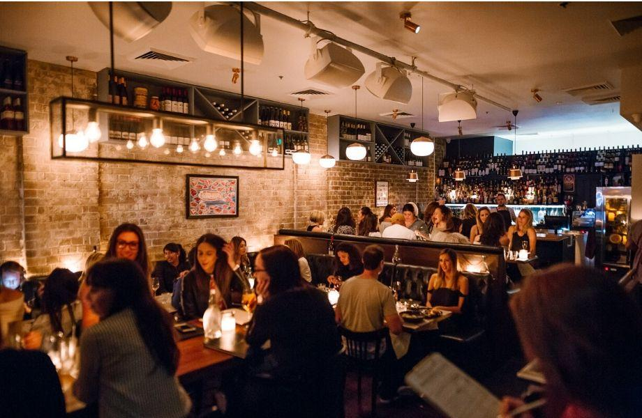
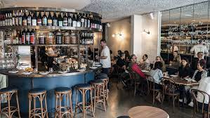
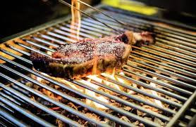
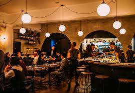
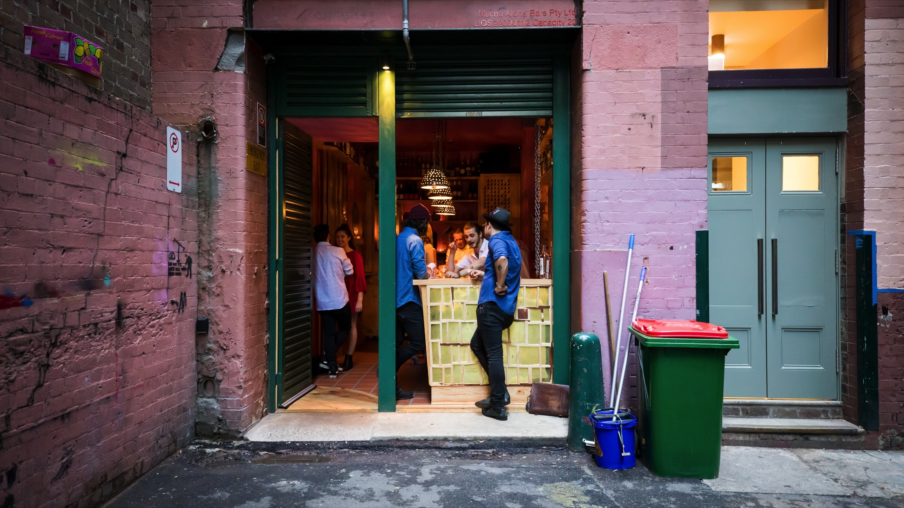

Restaurants/Bars in Sydney

10 William St
10 William St is a cozy and intimate restaurant located in the heart of Sydney's Paddington neighborhood. The restaurant offers a modern Italian-inspired menu that changes regularly to reflect the freshest seasonal produce available, paired with an extensive wine list that features both local and international wines. With its relaxed atmosphere and friendly service, 10 William St is a popular spot for both locals and visitors alike.
Visit website
Bennelong
Bennelong is located within the iconic Sydney Opera House and offers stunning views of the Sydney Harbour Bridge and the city skyline. The restaurant offers contemporary Australian cuisine that showcases the best of local produce and is led by acclaimed Executive Chef Peter Gilmore.
Visit website
Big Poppa's
A hip-hop inspired restraunt and bar. With tastes of italian acrossed the menu to wash down with wine and cheese this establishment houses hip-hop inspired menu items like the "Post Melone".
Visit website
Cafe Paci
Cafe Paci is known for its creative and innovative Scandinavian-inspired cuisine, featuring seasonal and locally sourced ingredients. The menu changes frequently to showcase the freshest produce, and the dining experience is complemented by an extensive wine list and exceptional service.
Visit website
Firedoor
Firedoor is a renowned restaurant located in Surry Hills. It specializes in wood-fired cooking techniques and offers a seasonal menu that showcases a wide range of meats, seafood, and vegetables. The restaurant's open kitchen and minimalist decor add to the unique dining experience.
Visit website
Ester
Ester is a chef loved restaurant that is told to get back to the basics. The cuisine included fried foods, and wood-fired food made for the soul.
Visit website
Cantina OK!
Cantina OK! is a popular restaurant located in Surry Hills, that serves Mexican-inspired cuisine and cocktails. The restaurant has a relaxed and fun atmosphere, with brightly colored decor and a lively bar. Customers can enjoy tacos, ceviche, and other dishes, along with creative cocktails and a selection of tequilas and mezcals.
Visit website
Fred's
An establishment with an open setting that's extremely inviting. Serving grilled lamb racks, and wine grapes as a signature dish this restaurant serves to impress.
Visit website